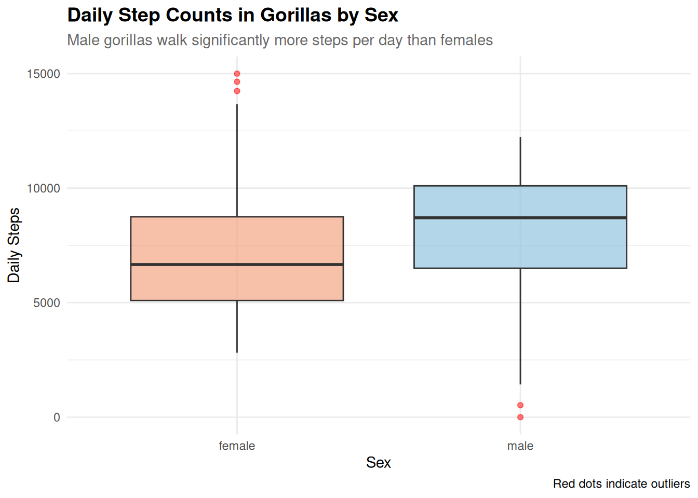
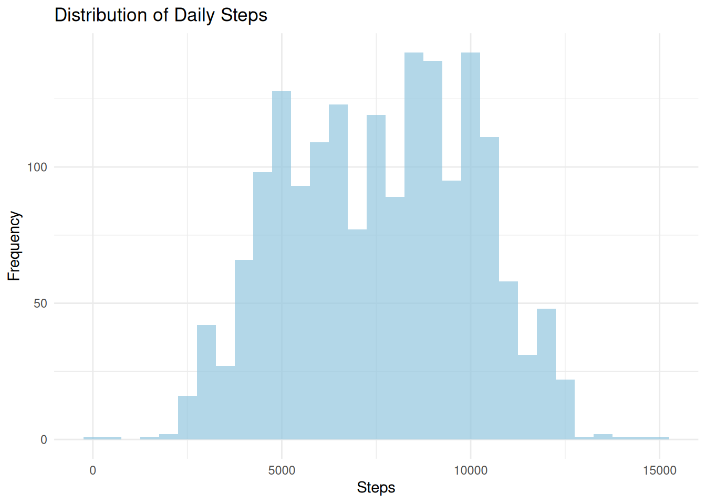
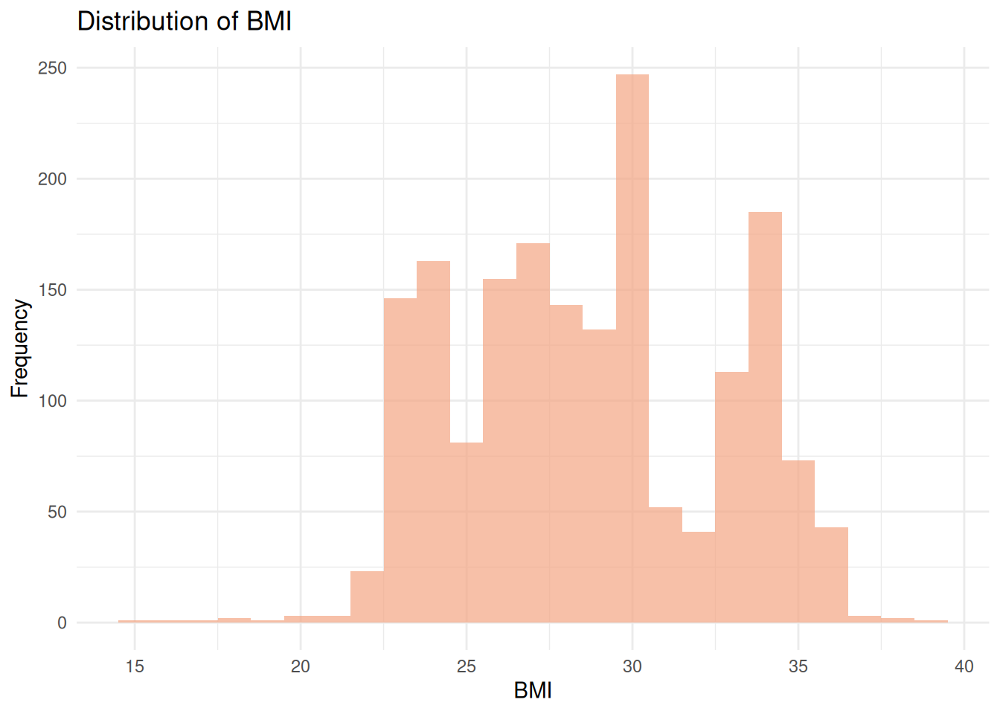
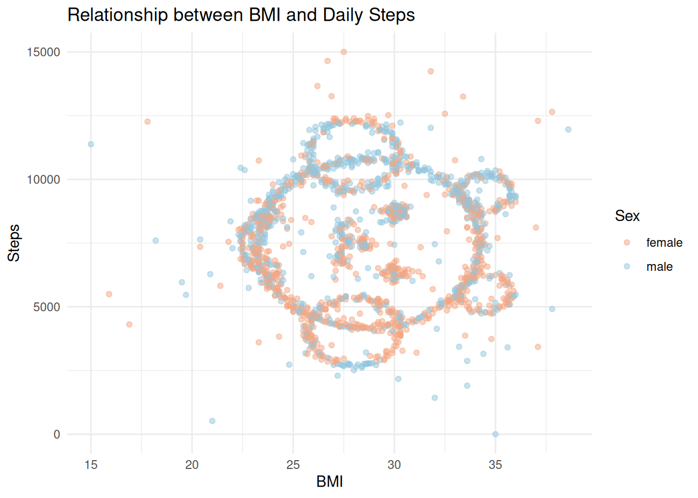

── Attaching core tidyverse packages ──────────────────────── tidyverse 2.0.0 ──
✔ dplyr 1.1.4 ✔ readr 2.1.5
✔ forcats 1.0.0 ✔ stringr 1.5.1
✔ ggplot2 3.4.4 ✔ tibble 3.2.1
✔ lubridate 1.9.3 ✔ tidyr 1.3.1
✔ purrr 1.0.2
── Conflicts ────────────────────────────────────────── tidyverse_conflicts() ──
✖ purrr::%||%() masks base::%||%()
✖ dplyr::filter() masks stats::filter()
✖ dplyr::lag() masks stats::lag()
ℹ Use the conflicted package (<http://conflicted.r-lib.org/>) to force all conflicts to become errors
data <-read_csv("raw_data/data.csv")
Rows: 1786 Columns: 4
── Column specification ────────────────────────────────────────────────────────
Delimiter: ","
chr (1): sex
dbl (3): id, steps, BMI
ℹ Use `spec()` to retrieve the full column specification for this data.
ℹ Specify the column types or set `show_col_types = FALSE` to quiet this message.
data
# A tibble: 1,786 × 4
id steps BMI sex
<dbl> <dbl> <dbl> <chr>
1 1 0 35 male
2 2 522 21 male
3 3 1430 32 male
4 4 1906 33.6 male
5 5 2171 30.2 male
6 6 2296 27.2 male
7 7 2516 28 male
8 8 2614 28.4 male
9 9 2667 27.5 male
10 10 2784 28.7 male
# ℹ 1,776 more rows
When I check the data, the minimum steps is 0, which means there are some missing values in the data, probably because some gorillas were not tracked for a whole day. The BMI is all positive, which makes sense because BMI cannot be negative. The sex variable has two unique values, M and F, which makes sense.
Task 2: Null Hypothesis Significance Testing
Task 2 Questions
We assume that the null hypothesis is that there is no difference in the average number of steps taken between male and female gorillas.
We can use a two-sample t-test to compare the means of the two groups
# Calculate from the data data |>group_by(sex) |>summarise(n =n(),mean_steps =mean(steps, na.rm =TRUE),sd_steps =sd(steps, na.rm =TRUE) )
# A tibble: 2 × 4
sex n mean_steps sd_steps
<chr> <int> <dbl> <dbl>
1 female 931 7055. 2384.
2 male 855 8205. 2397.
t_test_result <-t.test( steps ~ sex, data = data, var.equal =TRUE)t_test_result
Two Sample t-test
data: steps by sex
t = -10.16, df = 1784, p-value < 2.2e-16
alternative hypothesis: true difference in means between group female and group male is not equal to 0
95 percent confidence interval:
-1372.3463 -928.2404
sample estimates:
mean in group female mean in group male
7054.695 8204.988
Test used: We use the two-sample t-test to compare the means
Effect size: 0.48 which is a medium effect size, indicating a meaningful difference between the two groups
95% Confidence Interval of the difference: [-1372.3, -928.2] steps
p-value: < 2.2e-16, which is much smaller than 0.05
Conclusions
Scientific paper: A two-sample t-test revealed a statistically significant difference in daily step counts between male and female gorillas (t(1784) = -10.16, p < 0.001, Cohen’s d = 0.48, 95% CI [-1372.3, -928.2]), with males walking on average 1150 more steps per day than females.
Zoo sign: Male gorillas walk about 1,150 more steps per day than females — a meaningful difference supported by strong statistical evidence!
Cohen’s d measures how large the difference is between two groups, in terms of standard deviations. The formula is: d = (mean of group 1 - mean of group 2) / pooled standard deviation A t-test only tells you whether a difference exists (via the p-value), but not how big it is. Cohen’s d fills that gap.
In our data: - Male mean: 8,205 steps - Female mean: 7,055 steps - Difference: 1,150 steps - Pooled SD: ~2,390 steps - Cohen’s d = 1150 / 2390 = 0.48
This means the two groups differ by about half a standard deviation.
d
Effect size
0.2
Small
0.5
Medium
0.8
Large
A Cohen’s d of 0.48 is a medium effect — the difference is real and meaningful, but the two groups still overlap a lot. You cannot tell whether a gorilla is male or female based on steps alone.
ggplot(data, aes(x = sex, y = steps, fill = sex)) +geom_boxplot(alpha =0.7, outlier.colour ="red", outlier.alpha =0.5) +labs(title ="Daily Step Counts in Gorillas by Sex",subtitle ="Male gorillas walk significantly more steps per day than females",x ="Sex",y ="Daily Steps",fill ="Sex",caption ="Red dots indicate outliers" ) +scale_fill_manual(values =c("female"="#F4A582", "male"="#92C5DE")) +theme_minimal() +theme(plot.title =element_text(face ="bold", size =14),plot.subtitle =element_text(size =11, colour ="grey40"),legend.position ="none" )

What we see in the boxplot:
Male gorillas have a higher median.
Both groups have similar spread (consistent with nearly equal SDs of ~2,390)
The two boxes overlap, supporting the medium effect size (Cohen’s d = 0.48)
A few red outliers are visible in both groups
The difference is clear but not dramatic — you cannot separate the two groups by steps alone - but the difference is statistically significant and meaningful.
Task 3: Exploratory Data Analysis
3.1 Quick overview with skimr
library(skimr)skim(data)
Data summary
Name
data
Number of rows
1786
Number of columns
4
_______________________
Column type frequency:
character
1
numeric
3
________________________
Group variables
None
Variable type: character
skim_variable
n_missing
complete_rate
min
max
empty
n_unique
whitespace
sex
0
1
4
6
0
2
0
Variable type: numeric
skim_variable
n_missing
complete_rate
mean
sd
p0
p25
p50
p75
p100
hist
id
0
1
893.50
515.72
1
447.25
893.5
1339.75
1786.0
▇▇▇▇▇
steps
0
1
7605.37
2457.67
0
5475.00
7699.5
9596.25
15000.0
▁▆▇▆▁
BMI
0
1
28.71
3.91
15
25.70
28.5
31.90
38.6
▁▅▇▇▃
Task 3 Questions
ggplot(data, aes(x = steps)) +geom_histogram(binwidth =500, fill ="#92C5DE", alpha =0.7) +labs(title ="Distribution of Daily Steps",x ="Steps",y ="Frequency" ) +theme_minimal()

What we see in the histogram: - The distribution of steps is approximately symmetric (skewness = -0.05), close to normal. The 95% CI for mean daily steps is [7,491, 7,719], which is a narrow interval due to the large sample size (n = 1,786).
ggplot(data, aes(x = BMI)) +geom_histogram(binwidth =1, fill ="#F4A582", alpha =0.7) +labs(title ="Distribution of BMI",x ="BMI",y ="Frequency" ) +theme_minimal()

What we see in the histogram: - The distribution of BMI is more symmetric and approximately normal, with most gorillas having a BMI
ggplot(data, aes(x = BMI, y = steps, color = sex)) +geom_point(alpha =0.5) +scale_color_manual(values =c("female"="#F4A582", "male"="#92C5DE")) +labs(title ="Relationship between BMI and Daily Steps",x ="BMI",y ="Steps",color ="Sex" ) +theme_minimal()

# Check skewness and confidence interval of steps distributionlibrary(e1071)skewness(data$steps)
# Test correlation between BMI and steps by sexcor.test(female_steps, data |>filter(sex =="female") |>pull(BMI))
Pearson's product-moment correlation
data: female_steps and pull(filter(data, sex == "female"), BMI)
t = 0.72796, df = 929, p-value = 0.4668
alternative hypothesis: true correlation is not equal to 0
95 percent confidence interval:
-0.04043560 0.08799212
sample estimates:
cor
0.02387677
cor.test(male_steps, data |>filter(sex =="male") |>pull(BMI))
Pearson's product-moment correlation
data: male_steps and pull(filter(data, sex == "male"), BMI)
t = 1.1114, df = 853, p-value = 0.2667
alternative hypothesis: true correlation is not equal to 0
95 percent confidence interval:
-0.02909408 0.10480593
sample estimates:
cor
0.03802662
Summary of EDA Findings
Overview (skimr): - 1,786 observations, 4 variables, no missing values - Steps range from 0 to 15,000; BMI ranges from 15 to 38.6
Distribution of steps: - Approximately symmetric (skewness = -0.05), close to normal - Most gorillas take between 5,000 and 10,000 steps per day - A few individuals have 0 steps, possibly due to device not being worn - 95% CI for mean steps: [7,491, 7,719]
Distribution of BMI: - Approximately normal, centered around 28-29 - No extreme outliers
BMI vs Steps: - Pearson’s correlation shows no significant relationship between BMI and steps in either females (r = 0.024, p = 0.467) or males (r = 0.038, p = 0.267) - BMI is not a meaningful predictor of daily step count in gorillas
Sex differences: - Male gorillas walk more steps on average than females (8,205 vs 7,055) - This difference is statistically significant (t(1784) = -10.16, p < 0.001) - Effect size is medium (Cohen’s d = 0.48), meaning the two groups overlap considerably